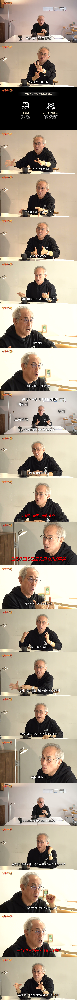

149 · 6 · 14 시간 전 · 원문

수집 당시 댓글 6개
↳ 답글 · lllllIIIIIll · 1 시간 전
지금도 그거 빠는 인간들 수두룩함
매드햄스터 · 2 시간 전
레볼루숑!
입맛다시는청년 · 2 시간 전
식민지 믿고 안일하게 국가 운영하다가
식민지들 다 잃고 미래 산업은 미국 동북아 3국에 먹히고
그러다보니 돈이 없지 병신들 ㅋㅋ
하수상한후원자 · 1 시간 전
유로파새끼들은 열강빨 빨아먹다가 한계온거지
Aquamarine · 1 시간 전
공짜복지를 쉽사리 주면 안되는 이유…
柔道 · 1 시간 전
부자는 망해도 3대가 먹고 산다지만
식민지열강 시절 끝나고 그 3대가 지나감ㅋㅋ
지금도 그거 빠는 인간들 수두룩함